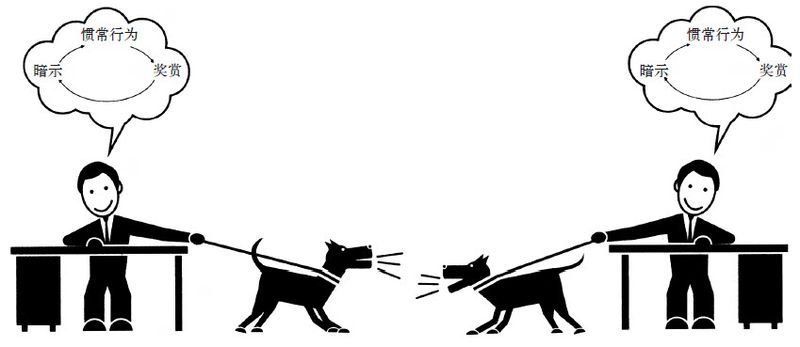
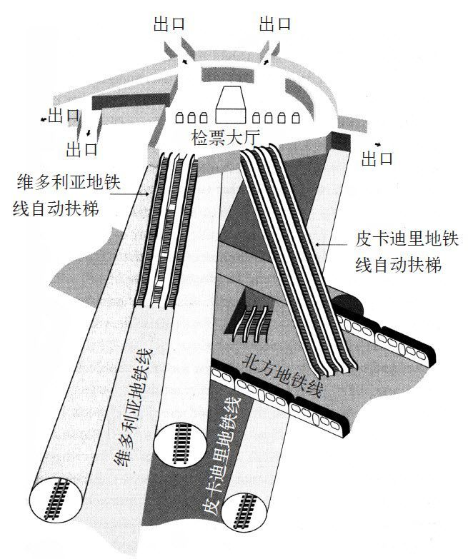

罗德岛医院的手术室迎来了一名病人，他在被推进来的时候就已经昏迷不醒了。他下颚松垮，双目紧闭，口中插着插管。护士给他接上呼吸机，以便在手术中将空气源源不断地输入他的肺部。这时，他布满老年斑的手臂滑下了担架。
这位病人已经86岁了，三天前在家里摔倒。之后他一直神志不清，也无法和人正常交流。最终他的妻子叫来了救护车。在急诊室中，一名医生向他询问事情的缘由，但他总是话没说完就打瞌睡。对他头部的扫描解释了这一切：他摔倒的时候，大脑重重地冲击了颅骨，形成了硬脑膜下血肿。血液聚集在他头盖骨的左部，对他颅骨内部脆弱的褶皱组织产生了挤压。淤血在72小时前就已经形成，会导致大脑中控制呼吸和心脏起搏的部分麻痹迟钝。如果不能及时抽出淤血，病人会有生命危险。
那时，罗德岛医院是美国领先的医疗机构之一，也是布朗大学主要的附属医院，同时还是新英格兰地区东南部唯一一家一级创伤处理中心。在这座砖石与玻璃结构的高楼中，医生们开创了各种尖端的医疗方法，其中包括使用超声波来粉碎病人体内的肿瘤这样先进的技术。2002年，该院的重症监护病房被美国国家医疗保健联盟评为全美同类机构最优之一。
但在这位老年患者入院之时，罗德岛医院因为另一桩事情出了名。医院内部局势紧张，在护士和医生之间，敌意和憎恨的暗流涌动。2000年，护士公会曾以被迫从事超长时间工作为由投票决定罢工。超过300名护士高举着写有“结束奴役制”和“荣耀属于我们”字样的牌子，齐立于医院门外。
“这地方有时候很糟糕，”面对记者，一位护士回忆说，“这里的医生会让你觉得自己的存在一文不值，就好像用后即弃的垃圾，就好像你应该为他们的提携感恩戴德。”医院的行政人员最终同意限制护士们的强制加班时间，但紧张事态还是进一步升级了。几年后，一名外科医生正在准备一例常规的腹部手术，但护士却坚决要求手术“暂停”。这种医疗中止在其他医院也是标准程序之一，医生和其他工作人员可通过短暂的休息来避免错误和事故的发生。在一次医疗事故后，罗德岛医院的护理工作人员对“暂停”的问题态度更为坚决。在那次事故中，一位本应接受眼部手术的女孩却在手术中一不小心被切除了扁桃体。“暂停”是为了在错误发生之前对其进行有效地遏制。在这次腹部手术中，当护士请求“暂停”以便医护人员聚集在病人周围探讨治疗计划时，医生却摔门而去。
“干脆你来主刀好了，”医生对护士说，“我出去打个电话，手术完成后再叫我进来。”
“你应该在这里坚守岗位，医生。”护士答道。
“我觉得你完全可以一个人处理。”医生边说边走向手术室的大门。
“医生，我认为你擅自离开是不合适的。”
医生停下脚步，看着护士。“如果我他妈的需要征求你的意见，我会问的。”他说道，“不要再质疑我的权威了。如果你连这点儿活都干不好，那就滚出我的手术室。”
护士请求了“暂停”，被拒绝后又花了几分钟时间将医生劝回。虽然手术进行得风平浪静，但从此以后，她再也不敢反驳医生，当其他违反安全规则的行为出现时，也不敢多置一词。
一位2000年曾在罗德岛医院工作的护士告诉我：“有些医生人很好，但有些脾气很臭。我们把医院称作玻璃工厂，因为这儿的一切好像随时都有可能碎成一地。”
为了缓解医护人员的紧张关系，员工们制定了一套不成文的、医院内部的独特规定，来帮助避免一些明显的冲突。例如，护士会对一些容易出错的医生的命令进行多次确认，默默地对病人施用的药物剂量进行确认。她们给病人填病历时会花更多的时间，以免毛躁的医生在手术中切错位置。一位护士告诉我说，她们制定了一套颜色代码来互相提醒。“我们在白板上将医生的名字与不同的颜色一一对应。”她说，“蓝色代表‘人不错’，红色代表‘脾气臭’，黑色代表‘不管你做什么，都别和他们作对，否则他们会把你脑袋拧下来’。”
罗德岛医院充斥着一种极具腐蚀性的文化。在美铝，经过精心设计的核心习惯都以工人的安全为核心，这种做法让公司一步一步取得了更大的成功。而罗德岛医院则不同，护士们形成的习惯是用来应对医生傲慢态度的。这间医院的惯例明显没有经过深思熟虑。相反，在护士们不敢声张的警告中，事故频频出现，愈演愈烈，最终形成了一种病态的模式。在那些没有精心设计习惯的组织中，这种情况极易出现。一个精心构建的习惯可以创造令人惊喜的改变，同样，错误的习惯会带来灾难性的结果。
当罗德岛医院的病态习惯集中爆发的时候，可怕的事故出现了。
这位86岁患有硬脑膜下血肿的病人进入了急诊室，当急诊室员工查看了患者的大脑扫描结果之后，他们立刻叫来了值班的神经外科医生。此时他正在进行一个常规的脊柱外科手术，收到传唤时，他离开了手术台，到电脑显示屏处查看老人的大脑扫描图。医生吩咐他的助手护士到急诊室通知老年患者的妻子在手术同意书上签字，然后继续完成了脊柱外科手术。半小时后，老人被推进了相同的手术室。
护士们跑来跑去作着准备。已然神志不清的老人被安置在手术台上。一位护士拿起他的手术同意书和病历。
“医生，”护士看着病历说道，“手术同意书上没有指出血肿的位置。”护士翻着手中的病历，上面没有显示该在头部的哪个部位进行手术。
在医院，医生都需要有知情书来指导手术。在造成刀创之前，病人或家属应该签署一份文件同意手术的每一个环节并核准有关细节。在混乱的环境中，例如数十名医生和护士在急诊室和恢复病房之间来回穿梭的情况下，知情同意书是用来跟踪手术程序的必要指引文件。在签署一份详尽的知情同意书之前，病人是不能接受手术的。
“我看了病人的脑部扫描，”医生说，“血肿位于大脑的右侧。如果我们不尽快施行手术，病人就危险了。”
“我们还是再看看扫描图吧，”护士一边说一边走向电脑终端。为了安全起见，医院的电脑会在15分钟无操作后锁定待机。护士要花至少一分钟的时间才能再次登录查看病人的脑扫描图。
“我们没时间了，”医生说，“他们跟我说老人的情况很危急，我们必须尽快降低颅内压。”
“要不我们找家属问一下？”护士问道。
“如果你真这么想，就去到那该死的急诊室找他的家属！在这段时间内，我负责救他的命。”医生夺过知情书，在上面草草地签了个“同意”。
“这就行了，”他说，“我们必须立即手术。”这位护士在罗德岛医院已经工作一年了，深谙这所医院的规则。他知道这位医生的大名可是在医院走廊白板上用黑体字重点标注的，护士们都避之不及。在这种情况下，那个不成文的规矩说得明明白白：别跟医生顶嘴。
护士放下病历站到了一边。医生将老人的头部放到一个篮架上，这样就可以接触到老人的头部右侧。护士为老人剃了头，然后在头部抹了杀菌剂。
手术计划是开颅后从头顶部吸出淤血。医生将头皮分为两瓣，露出病人的头骨，然后下钻头。他将钻头缓缓推入，直到钻头弄出了一声轻响。他又钻了两个洞，然后用锯子在病人头骨上开出一个三角形的创口。下面是一层包围着大脑的半透明鞘，即脑硬膜。
“哦，我的天哪！”有人惊呼道。
并没有什么血肿，手术的位置搞错了。
“把病人反过来！”医生喊道。
三角形的头骨又被放回了原位，并用小型金属板和螺钉固定，病人的头皮又被缝合起来。他的头部被转到另一侧，然后和刚才的程序一样，剃头，消毒，剖开，钻孔，然后形成再一个三角形创口。这次血肿清晰可见。脑硬膜穿透后，一个像一层厚糖浆的黑色肿块露了出来。医生抽出了淤血，病人的颅内压立刻就下降了。这个本应一个小时就能完成的手术，花了将近两倍的时间。
之后，病人被送到了重症监护病房，但他再也没有完全恢复意识。两周后，病人就去世了。随后的一项调查说病人的准确死因很难查出，但病人家属强调，病人孱弱的身体根本承受不住如此严重的医疗事故。两侧开颅手术的压力，手术时间过长，因手术延迟而造成的血肿扩散，都是将老人推向死亡的诱因。他们声称，如果不是手术的差错，老人可能也不会死。医院向家属支付了赔偿，主刀医生则被永远开除出了罗德岛医院。
一些护士说，这样的事故是不可避免的。罗德岛医院的制度习惯存在机能障碍，这样严重的医疗事故的发生只是时间问题[6]。当然，并不是只有医院才会形成如此危险的习惯模式，在成百上千的行业和企业中都有可能存在这种破坏性的组织习惯。而且，几乎所有的破坏性习惯都是轻率的产物，是那些拒绝构建企业文化、任其放任自流的领导者种下的恶果。没有制度习惯的组织是不存在的，一些组织没有去精心设计习惯，没有深谋远虑去创造习惯，所以往往在发展的过程中会有争斗和恐惧相伴。有时，一些能够审时度势、抓住机遇的领导者，能够转化破坏性的习惯。有时，在危机的煎熬中，正确的习惯也会应运而生。
1982年，当《经济变迁的演化理论》一书首次发行时，学术界之外很少有人注意到。该书封面设计平淡无奇，而开篇第一句话掷地有声：“在本卷中，我们将针对市场环境下企业经营的功能和行为提出一项演化理论，并围绕该理论建立和分析一系列模型。”这句话似乎是用来吓跑大部分读者的。这本书的作者耶鲁大学的教授理查德·纳尔逊和西德尼·温特，因发表了一系列深度探索熊彼特理论的论文而广为人知。面对他们撰写的论文，大部分的博士生都不敢不懂装懂。
在商业战略和组织理论领域，这本书的出版就如同投下了一枚重磅炸弹，很快它就被奉为20世纪最具价值的文献之一。在商学院，经济学教授开始与同事们讨论书中的理论，并在会议中将该理论介绍给CEO们。很快，各企业高管开始在工作中引用纳尔逊和温特的理论。这些企业涵盖各个行业，比如通用电气、辉瑞制药和喜达屋酒店。
纳尔逊和温特花了10多年时间研究企业运转的机制，在得到核心结论之前，他们已经在数据的沼泽中跋涉许久。他们写道，“大部分企业行为可以被理解为企业过去的一般习惯和战略方向的外在反映”，而非“针对决策的细枝末节进行详细调查的结果”。
或者用理论经济学以外的语言来解释，它可能看上去更像大多数组织在慎重决策基础上的理性决定，而非真正的企业运营机制。而企业中成千上万的员工独立决策形成的、长期坚持的组织习惯，才在真正指引着企业的行为。这些习惯可能造成的深远影响，也是人们始料未及的。
例如，一位服装公司的总裁在仔细审查销售记录和营销数据后，特地将一款红色羊毛衫的图片印在产品目录的封面上。
而与此同时，副总裁在反复浏览有关日本服装时尚的网页（红色在去年春季就是流行色）时；公司的营销人员正例行公事地向朋友们打听到底哪种颜色最“潮”；企业主管正从一年一度的巴黎时尚秀取经归来，并报告说已经获悉对手公司的设计师采用了一种新型的洋红色染料。所有这些细小的信息，包括高管之间闲聊得来的有关竞争对手的信息，以及将信息传播开去这种混乱模式的结果，已经逐渐融入了公司正式的调研惯例环节，并在最终得到一个共识：红色是今年的流行色。不会有人再去专门作调查了。数十种习惯、环节和行为在融合之后，似乎为公司得出了一个结论：红色是今年的不二之选。
这些组织习惯，或纳尔逊和温特所称的“惯例”，是十分重要的。缺乏组织习惯的企业无法顺利完成任何工作。惯例提供了公司在运营过程中应该遵守的成百上千条不成文的规定。
这些习惯允许工人不必步步请示，可以自主尝试新的构想。它们提供了一种“组织记忆”，使管理者不必每隔6个月重置所有销售环节，或每当有副总裁辞职后就感到恐慌。惯例减少了不确定性，例如，在墨西哥和洛杉矶的一次震后重建研究中，研究人员发现救助工人们的习惯至关重要（这些习惯是在一场场灾难中形成的，包括建立通信网络、征用儿童在邻里之间传递信息等）。“这是因为在政策的制定和实行的过程中，各项细节千头万绪。如果没有这些习惯，事情是很难办成的。”
但这些惯常行为最大的好处是可以消除组织中潜在的敌对团体或个人的恩怨。
大多数经济学家都习惯于将企业内部视为一个和谐的世界，在那里所有人都致力于实现共同的目标：尽量赚更多的钱。纳尔逊和温特指出，在现实世界中常常是事与愿违的。企业并非是一个所有人和谐共处的欢乐大家庭。相反，在大多数公司中，管理层为了信誉和权利明争暗斗，而这些经常以隐蔽的小规模冲突出现，比如美化自己的业绩，丑化对手。各部门为争夺资源大打出手，互相争功拆台。老板操控下属相互制约，以防结党营私。
职场如战场，公司也并非欢乐的大家庭。但是，尽管这种窝里斗一直存在，公司还是在相对的和平中不断发展，年复一年，这是因为有惯例（即习惯）在暗中起作用，每个人才能放下个人恩怨，来完成每天的工作。
组织习惯提出了一个基本的承诺：如果遵循既定模式接受“休战”，那么公司就不会被内部的争端搞垮，盈利仍将继续，最终所有人都会得到丰厚的回报。例如，一位销售人员心知肚明，他可以通过向客户提供大幅折扣以换取大额订单，从而拔高自己的奖金。但如果所有销售人员都采取相同方法，公司就要面临破产，就没有什么奖金可言了。此时，一种惯例会开始凸显：所有销售人员在每年一月聚到一起，定下提供的折扣限额，这样不仅可以保证公司的正常盈利，还可以让每人在年底领到可观的奖金。
或者，以一位正在竞争副总裁位置的年轻主管为例，如果他在大客户面前告公司的竞争者一个黑状，不仅可以结束竞争者的买卖，还能轻易地打击竞争者的部门，彻底剥夺他竞选升职的机会。虽然竞争者部门惨遭“黑手”对他个人有利，但公司则会遭受损失。所以在大部分企业中，人们之间都有一份心照不宣的契约：个人有野心是好的，但如果你折腾过了头，你的同事就会联合起来对付你。另一方面，如果你只管扩张自己的部门，而对竞争对手不闻不问，那么你迟早会被对手处理掉。

纳尔逊和温特写道，这些惯例和“休战”行为使得组织公正变得难以实现，但正是由于它们的存在，企业内部的冲突才能“有迹可循，保持在可预见的范围内，一切都与现行的惯例吻合……工作到位，赏罚得当……没人会为了排除异己而将企业置于一个危险的境地”。
大多数情况下，惯例和“休战”的效果都不错。当然，在企业中，敌对情绪依然存在，但出于体制习惯，这种情绪会被控制在适当范围内，公司的业务也能蓬勃发展。
然而，有的时候仅仅依靠员工停止相互敌视还是不够的。正如在罗德岛医院的情况，一种不稳定的和平状态往往和战争一样具有破坏性。
在你第一天上班的时候领到的工作手册，或许正静静躺在你办公室的一个抽屉中。手册中包括费用表、休假规则、保险方案和公司的组织结构图，用色彩明亮的图形描述不同的医保计划，相关的通讯录，还有如何使用个人电子邮件和参与401（k）退休金计划的说明。
现在设想一下，一位新同事向你询问在公司生存的不二法门，你会怎么告诉他。你的建议可能没有一句来自公司的员工手册。你所提供的建议是你在公司每天摸爬滚打、赖以生存的经验，例如哪些人是信得过的、哪位秘书比他的上司更有影响力、如何操纵官僚机构达成目标等。如果你将自己的工作经验绘成图表，分别表示公司中的非正式权力结构、人员关系、相同阵营和不同阵营，然后将你的图标盖在你同事们提供的图表上，就会形成一幅公司层级秘密划分的地图，这就成了一份指南，告诉你如何做事，让你知道谁是老大。
纳尔逊和温特提出的惯例与和平相处对所有行业来说都是至关重要的。举例来说，荷兰乌德勒支大学作了一项针对时尚前沿惯例的研究。他们发现，为了生存，每一家时尚设计公司都必须具备一些基本技能，如创意和对时尚的眼力，这样才能起步。但想要取得成功，只有这些还是远远不够的。
设计公司的惯例正是决定成功与否的关键：是否具有一套在批发商清空库存前获得意大利绒布的方法，是否有寻找最佳拉链和纽扣裁缝师的方法，是否具有在10日而不是3周内将货铺到店里的惯例。如果缺乏正确的运营程序，一个新企业可能会陷入物流停滞的困境，一旦这种情况出现，造成的损失会比创造力的缺失更加致命。时装界就是这样复杂。
那么哪些设计公司最后可能会形成正确的习惯呢？答案就是那些在适当的时机选择停止内耗，并与正确的伙伴结盟的企业。实现和平相处的时机十分重要，只有当企业的领导人与同行业的企业和平共处时，新的时尚品牌才会获得成功。
有些人认为纳尔逊和温特的著作只是基于干巴巴的经济学理论。事实上，他们为企业能在美国生存提供了方向。
不仅如此，纳尔逊和温特的理论还解释了罗德岛医院每况愈下的原因。这间医院的惯例在医生和护士之间造成了一种不安的和平，例如用来标示医生名字的白板。护士们之间相互低声警告的习惯成为了内部和谐的基本信号。这些默契的协作在大部分时间保证了机构的正常运作。而只有当真正的公正出现时，内部争斗停止后的和谐才能长久。如果内斗停止后的关系不平衡，换来的就不是真正的和平，那么惯例往往会在最需要的时候无法正常运作。
罗德岛医院最关键的问题是，护士往往是提出和解时做出妥协的一方。是护士们对病人的药物进行多次确认，花额外的时间认真填写病历；是护士们默默忍受着精疲力竭的医生们的辱骂；是护士们着手区分了好脾气和坏脾气的医生，其他人员才能够分辨出哪些医生能够在手术过程中接受建议，哪些医生会在你开口时大发雷霆。而医生们甚至懒得花时间去记住护士们的名字。“医生是老板，我们是跟班，”一位护士说道，“我们都是夹着尾巴求生存。”
罗德岛医院的和谐是一厢情愿的。因此在一些关键的时刻，如一位护士试图阻止医生草率开刀的时候，本来能够防止事故的惯例就会崩溃，86岁的患者头颅上出现了一个错位的创口。
有些人可能认为解决问题的办法是采取更公平的和解。如果医院在权责分配方面的工作更加到位，那么在医生和护士之间会出现一个更加合理的平衡点，双方也会被迫对彼此表示同等的尊重。
这是一个良好的开端，但还远远不够。并不是通过平衡权利就能创建一个成功的组织。组织要想正常运作，领导者必须在组织中培养出一种习惯，可以创造出真实与平衡的和平，有些矛盾的是，领导者还必须清楚地定下由谁负责。
43岁的菲利普·布里克尔是伦敦地铁的职员，1987年11月的一个夜晚，他正在国王十字地铁站的大厅中检票时，一位旅客忽然拦住他并宣称在附近的电梯底部有一个纸团正在燃烧。
国王十字站是伦敦占地最大、最宏伟，同时也是客流量最大的地铁站之一，拥有数不清的自动电梯、走廊和隧道，有些甚至已经有上百年的历史了。尤其这些自动电梯，向来以规模和古老远近闻名。一些由木质板条和橡胶扶手制造的电梯修建于数十年前，有5层楼那么高。每天，数量超过25万的乘客在途经国王十字站的6条地铁线路上来来往往。在傍晚下班的高峰期，车站售票大厅人山人海。大厅的天花板已经经过多次重新粉刷，几乎没人记得它原来的模样。
维多利亚地铁线自动扶梯

那位乘客说，就在皮卡迪里地铁线一座最长的电梯底部，有个纸团正在燃烧。听到这里，布里克尔立即离开了岗位，乘坐电梯来到月台，找到了那个正在冒烟的纸团，用一本卷起的杂志把火扑灭。然后他又回到了检票口。
对这件事布里克尔并没有作进一步的调查，他既没有追究纸团着火的原因，也没有勘察火苗是否蔓延到车站的其他地方。他既没有向其他人员提到这件事，又没有给消防部门打电话。毕竟已经有专门处理火灾的部门了，布里克尔知道，在分工森严的伦敦地铁系统中，最好还是不要插手别人的工作。况且，即使调查到了火灾的可能性，他也不知道针对自己掌握的情况应该采取什么措施。地铁系统中严格的管理系统不允许他在没有上级授权的情况下与其他部门擅自接触。而且地铁员工之间流传的惯例告诉他，无论在什么情况下，都不能在地铁站内大声叫喊如“着火了”之类的话语，不能引起乘客的恐慌。否则，就是不遵守规程。
地铁系统始终被一套看不见摸不着的理论规则支配着，这种不成文的规则规范着每一位员工的生活。几十年来，民事局、信号工程处、电气工程处和机械工程处，这“四巨头”的领导者领导着整个地铁系统和各自的部门，他们才是地铁系统的老板，也在各自的部门里小心翼翼地守护着各自的权力。19 000名地铁员工在这套微妙的系统下谨小慎微地合作，才保证了地铁的正常运行。但是这种合作建立在以上四个部门以及副手之间的权力平衡之上，而权力平衡又依托于成千上万名员工所坚持的习惯。这些习惯为四大部门及其代表挂出了免战牌，避免了内部争斗。而正是这个休战协定孕育出的政策不断提醒着布里克尔：你的工作不是调查火灾。安心工作，不要越矩。
“甚至在情况十分危急的时候，一名主管也不大可能会插手另一名主管的事务。”后来一名调查员说道，“因此，工程主管绝不会关心操作人员在火灾避险和疏散程序上是否得到了该有的培训，因为他觉得这是运营主管该操心的事。”
所以在纸团起火的问题上，布里克尔未置一词。在其他的情况下，这可能是个无关紧要的小事儿。但这次，纸团起火背后隐藏着巨大的安全隐患。这件事告诉我们，如果内部的平衡不合时宜，那么不管有多完美，都会造成重大的危险。
就在布里克尔返回检票亭的15分钟后，另一位顾客在搭乘皮卡迪里地铁线的电梯时看到了一缕青烟。他将情况反映给地铁工作人员，最终，国王十字站的安检员克里斯托弗·海斯展开了调查。第三位乘客在发现了自动扶梯台阶下升起的火光和黑烟后，按下了紧急停止按钮，并大声呼吁其他乘客离开自动扶梯。一位警察发现自动扶梯长长的通道内冒出一缕黑烟，而在电梯的下半截，火苗已经蹿上了台阶。
但安检员海斯却没有呼叫伦敦消防队，因为他没有亲眼看见黑烟。而且，地铁系统不成文的规定要求，除非情况十分危急，否则是不能擅自联系消防部门的。而那位警察倒是注意到了黑烟，并且准备向总部汇报，但他的对讲机在地下根本不起作用，于是他爬了很长的楼梯来到户外，并联系自己的上司，后者最终联系了消防部门。在傍晚7点36分的时候，也就是布里克尔初次接到火灾警告的22分钟后，一通电话才打到伦敦消防队：“国王十字地铁站出现小型火灾。”在那位警察通过对讲机向总部报告情况的时候，一批乘客正簇拥着涌入地铁站，跑下隧道，盘算着赶快乘地铁回家吃晚饭。
很快，将会有许多人丧生。
傍晚7点36分，一名地铁工作人员合拢了皮卡迪里地铁线的出入口，另一名员工忙着将客流疏散到其他楼梯。新的列车每隔数分钟到达。乘客下车后拥挤在月台上，楼梯底部人满为患。
安检员海斯走入一条通道，通道尽头是皮卡迪利地铁线自动电梯的机房，那里有一套专门用于自动电梯灭火的自动喷水控制系统。几年前，在其他地铁站发生的一起火灾造成一系列骇人听闻的后果，在意识到突发的小火会带来巨大风险之后，这套装置应运而生。近30次的研究和批评称，对于火灾，地铁系统并没有做到未雨绸缪。每个月台都应该安置洒水器和灭火器，并且所有人员都应该接受培训，以便灾难发生时能够正确使用。两年前伦敦消防队的副助理参谋长曾给铁路运营总监写信，并在信中抱怨地铁员工们缺乏安全的习惯。
“我真的非常担心，”他在信中写道，“我迫切希望，当火灾疑似险情出现时，乘客们能接收到明确的指示，地铁员工能够迅速联系消防部门。这能拯救不少的生命。”但是，安检员海斯却从没有看到过这封信，因为它被送到另外的部门去了。除此之外，地铁方面的政策也从来没有被修改以回应信中的警告。在国王十字站，依旧没人知道该如何操作电梯的自动灭火器，也没有人被授权使用灭火器，因为这是该其他部门操心的事。地铁系统中让人们和平相处的规则确保了所有人固守岗位安分守己，而在职责之外他们完全不闻不问。在跑过自动喷水灭火装置时，海斯只是匆匆地扫了一眼。
当他到达机房的时候几乎热晕了，这时火势已经变得难以控制了。他又跑回大厅，自动售票机前已经排起了长队，数百人在大厅中来来往往，走入月台或离开车站。海斯找到一名警察。
“我们必须阻止地铁进站，疏散所有乘客，”他对警察说，“火势已经不能控制了，到处都是火苗。”在纸团着火的半小时后，也就是傍晚7点42分，第一名消防队员到达国王十字站。他刚踏入售票大厅就看到浓烈的黑烟蜿蜒在天花板上。自动扶梯的橡胶扶手已经着了火，橡胶燃烧的刺鼻气味到处蔓延，这时售票大厅中的乘客才意识到出事了。他们开始涌向出口，消防队员则逆着人流穿过拥挤的人群。
售票大厅下面的大火仍在蔓延，整座电梯都已经着了火，大火产生的高温气体顺着电梯竖井上升到顶部，冲到覆盖着约20层旧涂层的隧道天花板上。就在几年前，地铁运营总监曾表示，这些旧涂层可能会引起火灾。他说，或许他们应该在粉刷新涂层之前把旧的铲掉。
然而更换涂层却不在他的职权范围内，这属于维修部的管辖范围。维修部长只是礼貌地向同事的建议表达了谢意。运营总监发现如果他要插手其他部门，那么其他部门很快会回敬自己。
运营总监撤回了他的建议。在高温气体冲到电梯竖井的天花板上的同时，旧油漆涂层开始吸收气体中的热量。每当有新的地铁经过，都会像风箱一样将新鲜的氧气带入车站，进一步助长火势。
傍晚7点43分，一列地铁到达车站，销售员马克·西维尔走下地铁。他迅速意识到周围的情况有些不对：空气能见度很低，月台上也挤满了人。烟雾在他身体四周飘荡，渐渐包围了停在铁轨上的车厢。他转过头想回到车厢里，但是门已经关上了。他开始敲打车厢的门窗，但为了防止车次延误，地铁部门有着如下非官方的规定：车门一旦关死，就不会再打开了。西维尔和其他乘客沿着月台跑上跑下，向司机尖叫要求他打开车门。这时信号灯变成了绿色，地铁驶离了车站。一位女士跳下轨道，在地铁驶入隧道的时候穷追不舍。她哭喊着：“让我进去！”
西维尔走下了月台，走向警察，而警察正在指挥人群远离皮卡迪里地铁站的自动扶梯，走另外的楼梯。惊慌失措的人群焦急地等待着上楼。他们都能闻到浓烟的味道，挤作一团。西维尔感到一阵燥热，不过这燥热是来自火灾还是喧嚣的人群，他就不得而知了。最后他来到一座停用的扶梯下方，顺着竖井爬上售票大厅。透过15英尺厚的隔墙，他的双腿能感受到从皮卡迪里地铁线电梯竖井内传来的阵阵炙热。后来他回忆道：“我抬头一看，周围的墙壁和天花板都在嘶嘶作响。”
7点45分时，一列到达的地铁将大量空气带入了车站。氧气大量涌入，皮卡迪利地铁线电梯中的烈火开始呼啸起来。下有烈火的蒸腾，上有灼热的天花板的炙烤，沿着竖井天花板四处蔓延的高温气体即将燃烧，也就是达到了“爆燃点”。此时，竖井内的油漆涂层、木质楼梯等一切可燃物都开始熊熊燃烧起来，爆燃的力量堪比枪筒内的火药爆炸，火焰吸收着热量，在竖井内加速攀升，规模不断扩大，扩散速度也越来越快，最终以火墙的形式冲出了隧道，冲进了售票大厅，里面所有的金属、瓷砖和人都着了火。半秒钟内，大厅内的气温就飙升到了150摄氏度。一位搭乘了另一边自动扶梯的警察事后向一位调查员回忆说,他看到“一束火焰喷射上来，最终形成了一个火球”。当时大约还有50名乘客滞留在大厅内。
而在地面之上的大街上，一位行人感觉到了从地铁出站口涌出的热流，并看到一位乘客跌跌撞撞地跑出来寻求帮助。一名救援人员说：“我用右手抓住了他的右手，我感到他的手红得发烫，有些烧坏的皮肤粘到了我手上。”一位在爆炸发生时刚好进入售票大厅的警察，事后在病床上向记者回忆道：“一个火球打到了我的脸上，我就摔倒了。我的手上也着火了，我感觉我的手被烧化了。”他是最后一批逃离大厅的幸存者之一。
在爆炸发生一段时间后，数十辆救火车才赶到。但根据消防部门的有关规定，消防队员没有动用安装在地铁站内的消防栓，而是把水管接在街边的消防栓上。另外，由于没有员工用蓝图向他们展示地铁站内的布局（这些图纸被锁在一间办公室里，无论票务代理还是车站经理都没有钥匙），大火最终被扑灭已经是几小时之后的事情了。
凌晨1点46分，即在乘客注意到纸团起火的6小时后，火终于被扑灭了。在这次事故中，31人死亡，数十人受伤。
“为什么地铁会直接把我带到火灾现场？”火灾次日，一位21岁的音乐教师在病床上问道，“我看见火在烧，人们在哭喊，为什么没有一个人对这件事负责？”
为了回答这些问题，我们首先要考虑伦敦地铁系统正常运转需要依靠的一些让人和平相处的规定：
票务人员的权责范围被限制于贩卖车票，因此，就算他们看到着火的纸团，也会为避免僭越之嫌保持沉默。车站的工作人员并没有接受过关于使用喷水灭火系统或灭火器的训练，因为这些设备是由其他部门负责的。
而伦敦消防队的火灾警告信被直接送到运营总监的手里，有关信息没有得到共享，因此车站安检员从来都没见过消防队的警告信。
而其他人员接到的指令是，尽量不要造成乘客的恐慌，因此不到万不得已的情况，不要擅自联系消防部门。
消防队则坚守着绝不使用其他机构安置的消防栓的命令，坚持使用自己的街道消防栓，而拒绝使用售票大厅的水管。
就某些方面来说，这些规则还是很有道理的。例如，票务人员只负责售票而不插手其他工作（比如留意火灾的征兆等）的习惯之所以存在，是为了应对几年前售票亭人手不足的情况。那时候票务人员经常离开岗位去捡垃圾或者给找不到车次的乘客指路，结果售票亭前往往会出现长队。因此，票务人员被勒令留在工作岗位，只管卖票，不许插手其他的事务。这个决定十分奏效，长队不见了。即使票务人员发现售票厅外出现了什么情况，但因为超越权责范围，所以也只会顾好自己的工作。
那么，为什么消防队员要坚持使用自己的设备呢？这个习惯来自10年前的一场事故。消防队员在把水管挂接到陌生的管道时浪费了过多的宝贵时间，致使火灾在一个车站内肆虐。事后，消防队员一致认为最好还是使用他们最熟悉的设备。
换句话说，这些惯例都是有理有据，事出有因的。地铁系统十分庞大和复杂，只有当内部和谐消除了所有的潜在障碍后,才能顺利地运作。和罗德岛医院内的情况有所不同的是，在地铁系统中，每一个内部和谐都创造了真正的权力均势，没有任何部门占据上风。
但还是有31人在事故中丧命。
在这场火灾爆发之前，伦敦地铁系统中的惯例与和谐似乎是合乎逻辑的。但在火灾暴发时，一个严重的问题凸显出来：没有一个人、一个部门、一名主管能对乘客的安全负起最终的责任。
有的时候，一个部门、一个人、一个目标有优先权时，其他就会显得次要，虽然这可能不受欢迎，或者会威胁到让地铁列车准时运营的权力均衡，但这是有必要的。有时候，内部的和平相处则会创造出让一切和谐都化为泡影的危险。
当然，在这个结论中存在着一个悖论。一个组织如何才能在按习惯平衡权力的同时，甄选出一个凌驾于其他人之上而拥有优先权的个人和目标？护士和医生如何在权利均摊的同时，确定到底要由谁来主持工作？地铁系统又该如何在优先保证安全的情况下，避免系统内部因权力争夺而陷入困顿，即使这种做法意味着要将之前的权利规则推倒重来？
托尼·邓吉接手倒霉的海盗队时，保罗·奥尼尔担任麻烦重重的美铝CEO时，都发现并利用了同样的优势，而这就是答案。霍华德·舒尔茨在2007年回到萎靡不振的星巴克时，利用的也是同样的机会。所有这些领导者都抓住了源自危机的可能。在变化动荡之中，组织习惯会变得极具可塑性，足以让人重新分配责任，创造出更加公平的权力均衡。危机是如此宝贵，实际上，有时候应该让人感觉灾难将至，而不是让其就此淡化。
在那位老年患者接受了拙劣的颅骨手术一命呜呼后，仅仅4个月，罗德岛医院的另一位外科医生犯了一个相似的错误，在另一位患者头部错误的区域实施了手术。这一误诊行为受到了美国国家卫生部的谴责，并对该医院处以5万美元的罚款。18个月后，又一位外科医生在一名儿童的腭裂手术中搞错了施刀位置。
5个月后，一位外科医生在手术中搞错了病人的手指。10个月后，一个钻头被遗漏在患者的头颅中。
对于这些医疗事故和误诊现象，罗德岛医院已经赔付了高达45万美元的罚款。当然，罗德岛医院并不是唯一出现事故的医疗机构，但它却十分不幸地成为了反面教材。当地的报纸对每个事故都进行了详尽的报道，电视台的记者也在医院门外安营扎寨。最终连国家媒体都参与进来。“这个问题已经旷日持久。”一名国家医院认证组织的副会长对美联社记者如是说。国家卫生部向记者们发布声明，罗德岛医院是一家十分混乱的医疗机构。
“我感觉自己像是在战场上工作一样。”一位护士对我说道，“当医生们走向自己的车的时候，电视台记者就埋伏在四周。一个小男孩在手术前请求我，千万不要让医生意外地切掉他的胳膊。感觉就好像一切都失去了控制。”
评论家和媒体一拥而上，医院内出现了前所未有的危机。一部分行政人员开始担忧医院将会被吊销执照，而其他人则摆出了一副防卫的姿态，将电视台的人挨个请了出去。一位医生告诉我说：“我找到一个扣子，上面印着‘替罪羊’，我准备把扣子缝在衣服上去上班，但我妻子觉得这是个馊主意。”
然后，在86岁老人死亡前一周已经升任首席质量官的，玛丽·莱科·库帕博士站了出来。在医院的管理工作人员会议上，库帕说他们之前对于事态的认识都存在误区。
她说，所有的批评都不是坏事。事实上，医院获得了一次其他机构很难得到的机会。“我认为这是一个开始，”库帕博士向我说道，“医院很久以前就在尝试解决这些问题，但老是失败。有时候人们需要逆境的鞭策，而医院的这些负面影响就是巨大的逆境，它给了我们一个机会来重新审视这一切。”
罗德岛医院将所有非紧急手术部门关闭了一整天（当然这也是一笔巨大的损失），并安排所有员工参与到一项高强度的培训计划中，这项计划强调了在护士和医务人员中下放权力的重要性，并强调了团队合作。会议罢免了原来的神经科主任，并选举了新的领导。医院还邀请了领先的医疗机构联盟——医疗保健改革中心来帮助并重新设计了手术保障机制。管理人员在每一间手术室内安装了摄像头，来监督手术过程中“暂停”和手术一览表确认的执行情况。医院的所有员工都可以通过一套计算机系统匿名举报那些危及病人健康的医疗错误。
在这些举措当中，有一些几年前就曾有人在医院中提出过，但一直没有得到贯彻。医生和护士们不愿意拍摄自己的手术过程，也不愿意其他医院的医护人员指指点点。但是一旦危机笼罩了整所医院，每个人都愿意做出一些改变。
在发现错误之后，其他的医院也做出了类似的改变。几年前原本拒绝做出改善的医院的手术错误率也不断下降。一些机构，如罗德岛医院，在发现危机感充斥全局的时候，通常就会进行改革。例如，在20世纪90年代末，哈佛大学的附属医院之一柏斯以色列狄肯尼斯医学中心，就经历了一段事故和内耗相继爆发的时期。争端不仅见诸报端，在公开会议上也常常上演护士和管理人员对骂的闹剧。有传闻说，如果这种情况继续，将会有政府官员出面强制关闭医院的一些部门。面对外界的重重压力，医院内部不得不集思广益寻求方法，改变自己的机构文化。其中一种办法是“安全探讨”，即每三个月，都有一位资深医师都要在上百名同事面前针对特定的手术或诊断开展探讨，或对一次有惊无险的医疗事故进行细致入微的描述。
“公开承认错误是很痛苦的。”就任柏斯以色列狄肯尼斯医学中心首席助理医师的唐纳德·摩曼博士说，“在20年前，没有医生会这样做。但在现在，一种切实的恐慌感已经在医院中蔓延开来，即便是最棒的外科医生也愿意提及自己险些造成严重事故的往事。医疗行业的氛围正在改变。”
优秀的领导者会抓住危机来重塑组织习惯。例如，美国国家航空航天局的管理人员尝试了数年时间，来完善机构的安全习惯，但在1986年“挑战者”号航天飞机爆炸之前，所有努力都宣告失败。而正是在这一悲剧之后，美国国家航空航天局才能够彻底检查自己对质量标准的执行情况。
同样，航空公司的飞行员花费了数年时间来说服飞机制造商和空管员重新设计驾驶舱布置和交通管制通讯惯例，但没有任何结果。后来在1977年西班牙特内里费岛上的一次跑道事故中，583人丧命。事故发生后的5年内，驾驶舱设计、跑道程序、交通管制通讯惯例都进行了彻底的修订。
事实上，对于英明的领导者来说，危机是一种可以延长危机感的宝贵的机会。在国王十字站的灾后工作中，领导者把握住了这次机会。火灾的5天后，英国国务卿委派德斯蒙德·芬内尔作为特别侦查员对火灾事件进行研究。芬内尔从地铁系统的管理层着手，很快发现大家都知道在这几年里火灾一直都是一个很大的隐患，但是却没人着手进行改善。一些管理人员曾经建议构建一种能够明确防火责任的新型管理层级结构，还有人提议赋予车站经理更大的权力以沟通不同部门间的交流合作，但这些改革建议都没有得到实施。
当芬内尔准备提出自己建议时，遭遇到了相同的阻力：各部门主管不仅拒绝承担责任，并且通过向下属施压拒绝合作。
所以他决定让媒体协助调查。
他呼吁召开了一场为期91天的公众听证会，以揭露一个对多重风险警告不闻不问的组织。
他还向报刊记者们暗示说，地铁乘客一直处于极端的危险当中。他询问了数十位目击者，详尽描述了一个视地盘争夺甚于通勤安全的组织。在火灾发生的一年后，他发布了言辞犀利的最终报告。这本250页的“控诉书”，将沉溺于官僚糜习、庸碌无为的地铁系统曝光于天下。芬内尔写道：“虽然这只是针对某个夜晚发生的火灾事件而作的调查，但这篇报告最终会扩展成对整个地铁系统的检查。”在报告最后，他提出了尖锐的批评和建议，其实就是在说整个地铁系统不是极端无能，就是腐败透顶。
这篇报告立刻引起了势不可当的轩然大波。乘客对地铁办事处进行了围堵，领导层全部被解职。一系列新规则随之出台，地铁系统的风气也焕然一新。如今，每一座地铁站都有一位负责乘客安全的经理，每一位员工都有义务与乘客就最细微的风险迹象及时沟通。所有地铁仍能按时运行，但地铁系统中的习惯与和谐行为得到了优化调整，对防火责任的最终归属问题进行了足够的明确。在面对突发情况时，不管是否有僭越之嫌，每名员工都有权采取行动。
一个企业，无论它的组织习惯产生了怎样恶性的“和谐”氛围，无论这些习惯是出于轻率还是疏忽，都有可能做出同样的改变。可能由于领导者的命令，一个存在功能障碍习惯的企业很难做出改变。但明智的领导者会寻求危机甚至创造危机感，并让大家都有需要改变的感觉，直到最后所有人都作好准备来彻底改变他们以往习惯的行为模式。
“你永远不会希望浪费一场严重的危机。”2008年全球金融危机之后，刚刚被任命为奥巴马总统参谋长的拉姆·伊曼纽尔说道，“危机可以为我们提供机会，让我们做之前不能做的事。”金融危机后不久，奥巴马政府说服不情愿的议会通过了总统的7 870亿美元经济刺激计划。议会还通过了奥巴马的医疗改革法案、修订了消费者保护法，并批准了数十项法案——从扩大儿童健康保险，到赋予妇女对工资歧视重新上诉的机会，不一而足。这是继“伟大社会”和罗斯福“新政”之后最大的政策变化之一。这一切之所以会发生，都是因为在金融海啸之后，立法者看到了其中改革的契机。
86岁患者的死亡和其他医疗事故给罗德岛医院敲响了警钟。自2009年罗德岛医院开始全面实行全新的安全规程，类似的医疗错误再也没有出现过。最近，罗德岛医院还获得了美国外科学院授予的灯塔奖。这是对医院在癌症病患护理质量的赞誉，也是对医院重症护理水平的最高认可。更重要的是，罗德岛医院的医生和护士纷纷表示，这家医院已经焕然一新了。
2010年，年轻的护士艾莉森·沃德走进手术室来协助一例常规手术。虽然已经在这里工作了一年，但她仍然是房间中最年轻、最没有经验的。手术开始前，手术组的全部成员集中在失去知觉的患者四周，叫了“暂停”。主治医生读着贴在墙上的一览表，里面详细记录着手术的每一个步骤。
“很好，最后一个步骤，”在拿起手术刀之前，主治医生说，“在我们开始前，还有人有什么问题吗？”
这种手术医生已经做了成百上千次了。他的办公室墙上挂着满满的学历和获奖证书。
“医生，我有话说，”27岁的沃德说道，“我想提醒大家，在手术的第一、第二环节之前我们要稍事暂停。刚才您并没有提到，我只是想确认一下是否大家都还记得。”
在几年前，她可能会因为提出这样的评论而遭到责骂，甚至结束自己的职业生涯。
“多谢提醒，”医生说道，“下次我会记得提醒大家。”
“好了，我们开始吧。”
后来沃德告诉我：“我知道，这间医院经历过一段艰难的时期，但现在医院内部已经十分团结了。我们所接受的培训以及所有的榜样都告诉我们，医院的整体文化都集中在了团队合作上。我感觉自己可以畅所欲言。在这里工作感觉真的很棒。”